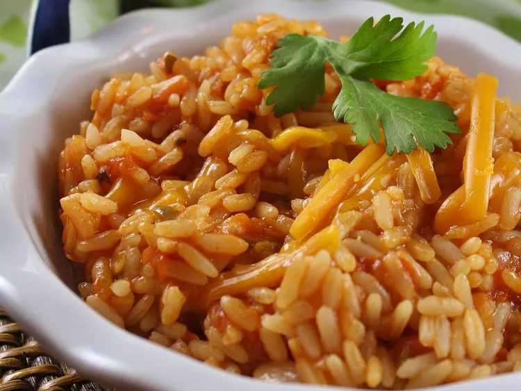

home
Red Rice
Description:

The following contains the ingredients needed to make amazing red-rice!
-
Grate tomatoes into a bowl using a box grater; discard tomato skins
- Heat vegetable oil in a heavy skillet over medium-high heat
- Add onion; cook and stir until tender, about 5 minutes
- Stir in garlic and cook until fragrant, about 1 minute
-
Stir in rice and cook, stirring often, until rice is lightly toasted,
about 3 minutes
-
Stir in grated tomato, chicken broth, and tomato sauce; bring mixture to
a boil
- Stir in jalapeño pepper, cilantro, and salt; reduce heat to low
-
Cover the skillet and simmer until liquid has been absorbed, about 15
minutes
- Turn off the heat; let rice stand, covered, for 8 minutes
- Fluff with a fork before transferring rice to a serving dish